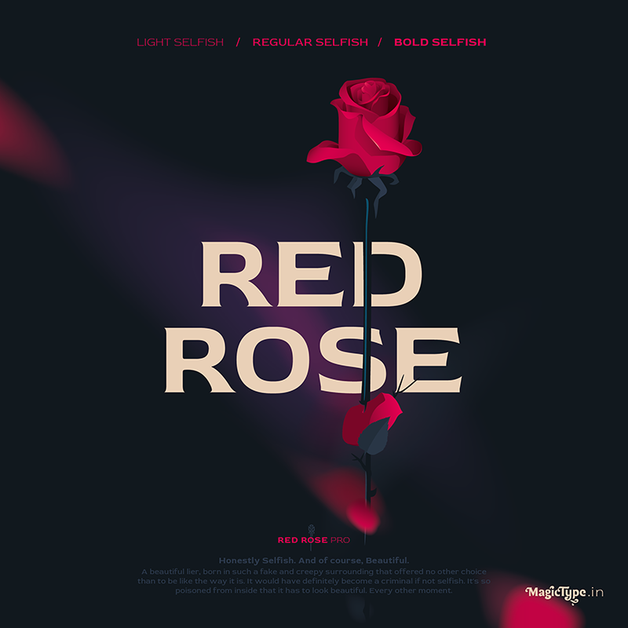
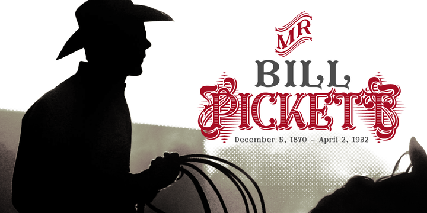

Шрифт (нем. Schrift от schreiben «писать») — графический рисунок начертаний букв и знаков,
составляющих единую
стилистическую и композиционную систему, набор символов определённого размера и рисунка.
Рубленные шрифты без засечек (San Serif)
Шрифты без засечек называются рублеными. В Англии, и Франции такие шрифты чаще называются Sans Serif, в Америке Gothic, в Германии Grotesk.
Шрифт San Fsancisco
San Francisco — шрифтовая гарнитура типа новый гротеск, созданная компанией Apple. Была впервые представлена для
разработчиков 18 ноября 2014 года.
Сперва использовался как системный шрифт Apple Watch, а позднее заменил и Helvetica
Neue в MacOS и iOS, начиная с OS X El Capitan и iOS 9.
- Поддержка кириллицы: Да
- Поддержка латиницы: Да
- Начертания: Light, Light Italic, Regular, Italic, Medium, Medium Italic, Semibold,
Semibold Italic, Bold, Bold Italic, Heavy, Heavy Italic
Red Rose

- Поддержка кириллицы: Нет
- Поддержка латиницы: Да
- Начертания: Light, Regular, Medium, SemiBold, Bold
Шрифты с засечками (Serif)
Шрифт антиква происходит от прописных букв древнеримских монументальных надписей и от книжного минускула эпохи Ренессанса
Засечки (от англ. serif) в антиквенных шрифтах — небольшой перпендикулярный штрих на конце буквы.
При чтении печатного
текста, засечки направляют движение глаз вдоль строки.
Засечки облегчают визуальное восприятие и читаемость текста, так
как связывают буквы в одну линию.
Шрифт Scotch Modern
- Поддержка кириллицы: Да
- Поддержка латиницы: Да
- Начертания: Regular, Italic, Bold, Bold Italic
Брусковые шрифты (Slab Shrif)
Основной особенностью брусковых шрифтов являются массивные засечки, которые могут быть прямоугольными, трапециевидными
или скруглёнными.
В отличие от антикв, они выделяются своей массивностью.
Шрифт Sports World
- Поддержка кириллицы: Да
- Поддержка латиницы: Да
- Начертания: Regular
Рукописные шрифты (Cursive)
Cursive fonts mimic the style of human penmanship where the letters flow together.
Letters may be joined or unjoined.
The cursive handwriting style is functional and intended to be used for everyday writing.
Bonheur Royale
- Поддержка кириллицы: Нет
- Поддержка латиницы: Да
- Начертания: Regular
Декоративные шрифты (Fantasy)
Декоративными называют шрифты используемые для оформления и придания тексту выразительного образа, такие шрифты имеют различные украшающие элементы.
Шрифт Furius

- Поддержка кириллицы: Да
- Поддержка латиницы: Да
- Начертания: Medium